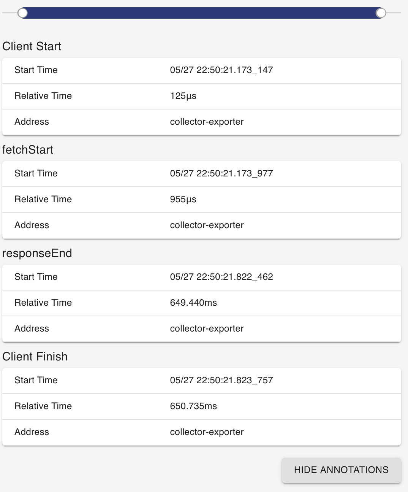
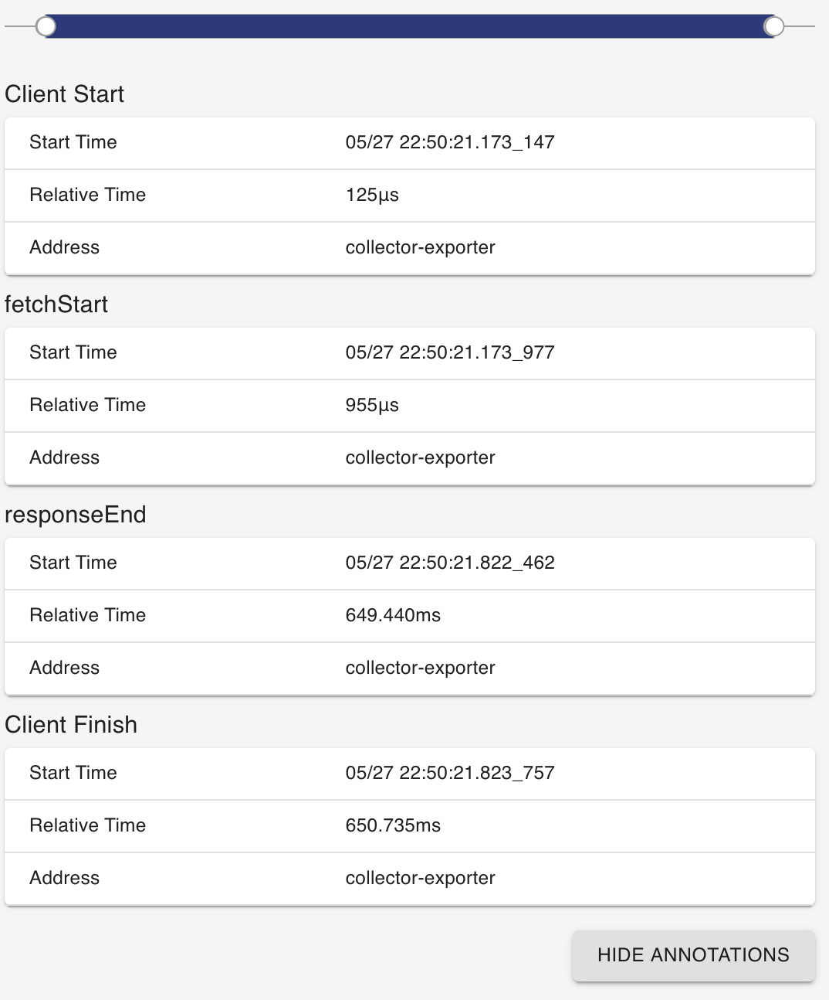

Module @opentelemetry/instrumentation-fetch
OpenTelemetry Fetch Instrumentation for web


Note: This is an experimental package under active development. New releases may include breaking changes.
This module provides auto instrumentation for web using fetch.
(Note: This instrumentation does not instrument Node.js' fetch. See @opentelemetry/instrumentation-undici for that.)
Installation
npm install --save @opentelemetry/instrumentation-fetch
Usage
import {
ConsoleSpanExporter,
SimpleSpanProcessor,
WebTracerProvider,
} from '@opentelemetry/sdk-trace-web';
import { FetchInstrumentation } from '@opentelemetry/instrumentation-fetch';
import { ZoneContextManager } from '@opentelemetry/context-zone';
import { registerInstrumentations } from '@opentelemetry/instrumentation';
const provider = new WebTracerProvider({
spanProcessors: [new SimpleSpanProcessor(new ConsoleSpanExporter())]
});
provider.register({
contextManager: new ZoneContextManager(),
});
registerInstrumentations({
instrumentations: [new FetchInstrumentation()],
});
// or plugin can be also initialised separately and then set the tracer provider or meter provider
const fetchInstrumentation = new FetchInstrumentation();
const provider = new WebTracerProvider({
spanProcessors: [new SimpleSpanProcessor(new ConsoleSpanExporter())]
});
provider.register({
contextManager: new ZoneContextManager(),
});
fetchInstrumentation.setTracerProvider(provider);
// and some test
fetch('http://localhost:8090/fetch.js');
Example Screenshots
 


See examples/tracer-web/fetch for a short example.
Fetch Instrumentation options
Fetch instrumentation plugin has few options available to choose from. You can set the following:
| Options | Type | Description |
|---|---|---|
applyCustomAttributesOnSpan |
FetchCustomAttributeFunction |
Function for adding custom attributes |
requestHook |
FetchRequestHookFunction |
Function for adding custom attributes or headers before the request is handled |
ignoreNetworkEvents |
boolean |
Disable network events being added as span events (network events are added by default) |
measureRequestSize |
boolean |
Measure outgoing request length (outgoing request length is not measured by default) |
semconvStabilityOptIn |
string | A comma-separated string of tokens as described for OTEL_SEMCONV_STABILITY_OPT_IN in the HTTP semantic convention stability migration guide. See the "Semantic Conventions" section below. |
Semantic Conventions
Up to and including v0.200.0, instrumentation-fetch generates telemetry using Semantic Conventions v1.7.0.
HTTP semantic conventions (semconv) were stabilized in semconv v1.23.0, and a migration process was defined. instrumentation-fetch versions 0.201.0 and later include support for migrating to stable HTTP semantic conventions, as described below. The intent is to provide an approximate 6 month time window for users of this instrumentation to migrate to the new HTTP semconv, after which a new minor version will change to use the new semconv by default and drop support for the old semconv. See the HTTP semconv migration plan for OpenTelemetry JS instrumentations.
To select which semconv version(s) is emitted from this instrumentation, use the semconvStabilityOptIn configuration option. This option works as described for OTEL_SEMCONV_STABILITY_OPT_IN:
http: emit the new (stable) v1.23.0 semanticshttp/dup: emit both the old v1.7.0 and the new (stable) v1.23.0 semantics- By default, if
semconvStabilityOptInincludes neither of the above tokens, the old v1.7.0 semconv is used.
Span name: With the old v1.7.0 semconv the span name is HTTP {method} (for example 'HTTP GET'). Using the stable semconv v1.23 for HTTP span names, the span name is {method} (for example 'GET'). If both semconv versions are being emitted, the old name wins. (This instrumentation does not currently support adding an {http.route} to the span name.)
Span status: When the stable semconv is selected, the span status is set to ERROR when the response status code is >=400. When just the old semconv is select, the span status is not set.
Span attributes:
| v1.7.0 semconv | v1.23.0 semconv | Notes |
|---|---|---|
http.method |
http.request.method |
HTTP request method. With v1.23.0 semconv http.request.method_original may also be included. |
http.url |
url.full |
Full HTTP request URL |
http.host |
server.address and server.port |
The hostname and port of the request URL |
http.status_code |
http.response.status_code |
HTTP response status code |
http.request_content_length_uncompressed |
http.request.body.size |
This is only added if measureRequestSize is true. |
http.response_content_length_uncompressed |
(not included) | Stable HTTP semconv would use http.response.body.size, but this is an Opt-In attribute, so would require adding a configuration option to this instrumentation to enable. |
http.response_content_length |
(not included) | Stable HTTP semconv would use http.response.header.<key>, but this is an Opt-In attribute, so would require adding a configuration option to this instrumentation to enable. |
| (no equivalent) | error.type |
The response status (as a string), if the response status was >=400. |
http.user_agent |
(not included) | Stable HTTP semconv would use user_agent.original, but this is an Opt-In attribute, so would require adding a configuration option to this instrumentation to enable. |
http.scheme |
(not included) | Stable HTTP semconv would use url.scheme, but this is an Opt-In attribute, so would require adding a configuration option to this instrumentation to enable. |
http.status_text |
(not included) | This is no longer a documented semantic conventions attribute. |
component |
(no replacement) | component was an ancient Span "tag" that was never formalized. |
Useful links
- For more information on OpenTelemetry, visit: https://opentelemetry.io/
- For more about OpenTelemetry JavaScript: https://github.com/open-telemetry/opentelemetry-js
- For help or feedback on this project, join us in GitHub Discussions
License
Apache 2.0 - See LICENSE for more information.